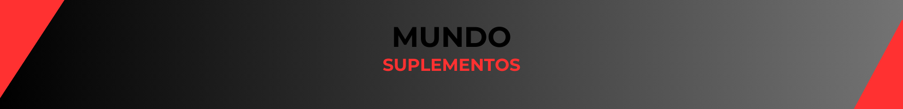

MUNDO SUPLEMENTOS
Somos una empresa que vende suplementos Fundada en 2020 por un grupo de amigos y desde siempre nuestro objetivo fue que cumplas el tuyo.
Tenemos las mejores marcas del mercado y los mejores precios del mercado, actualizados semana a semana!
Pero si por X motivo no podés adquirir uno de nuestros productos, te dejamos unos consejos para que puedas cumplí tu cambio objetivo
ALIMENTACION
.Si tú objetivo es ganar masa muscular es necesario realizar un Superávit-Calorico. ¿Que es?
El superavit calórico significa consumir más calorías de las que necesitamos para mantener nuestro peso diariamente, por ejemplo si con 2000Kcal mantengo mi peso, le aumento entre 300-500 Calorías, es decir que tendría que consumir 2300-2500 Calorías para poder hacer el superavit calórico.
También hay que darle atención a los macronutrientes (Proteinas-Grasas-Carbohidratos) por ejemplo las proteínas nos mantienen saciado
Pero si tú objetivo es Perder Grasa lo ideal sería hacer un Déficit-Calorico ¿Que es?
Un déficit calórico es lo contrario al superavit, es decir que si en superavit sumabamos de 300 a 500 calorías a nuestras calorías de mantenimiento, ahora en déficit, lo que tenemos que hacer es restarle entre 300 a 500 calorías, en esta etapa es muy importante también el tema de macronutrienes(Proteinas-Grasas-Carbohidratos) ya que como tenemos que consumir menos cantidad de calorías hay que saber aprovecharlas para no pasar hambre, por ejemplo las proteínas nos dan saciedad, una muy buena herramienta que podemos usar para no pasar hambre en esta etapa, también aparte de darnos saciedad es el macronutrienes que nos hace mantener el músculo, porque acordate no es lo mismo perder grasa que perder peso, perder peso es de manera lenta, no vamos a bajar 10 kilos en 4 días, la idea en esta etapa es ir lento, disfrutando el proceso así perder la mini a cantidad de músculo.
ENTRENAMIENTO
Acá es parecido en las 2 Etapas,
Para ganar masa muscular es importante entrenar intenso y cerca o al fallo ( si se entrena al fallo, no es en todos lo ejercicios porque hay algunos que generan mucha fatiga entrenarlos al fallo, lo que conlleva a qué no se puedan recuperar para la otra sesión, cosa que provoca el estancamiento) para que nuestras fibras musculares se rompan y vuelvan a crecer más grandes.
Para perder grasa también tenemos que entrenar muy intentos, esto para poder darle al cuerpo una señal, diciéndole que no se deshaga del músculo, es decir dándole un motivo al cuerpo para que mantenga al músculo, ya que también vamos romper las fibras musculares
DESCANSO
Es muy importante el descanso porque es donde el cuerpo se regenera para otra sesión intensa de entrenamiento y también es donde los músculos crecen, porque en el entrenamiento no crecen, solo es el famoso "bombeo" que es cuando la sangre pasa por el músculo haciéndolo ver más grande pero después de un tiempo corto vuelve a la normalidad.
También es importante el descanso para la etapa de perdida de grasa y no solo para estás 2 Etapas sino para tu bienestar general y para que puedas rendir bien en el día haciendo tus actividades favoritas, es importante dormir entre 7-9 Horas.
En resumen general, es importante dar tu 100% en las 3 cosas (Alimentacion-Entrenamiento-descanso) ya que si no se cumple 1 las otras 2 no van a servir, ejemplo, si comes bien y entrenas bien pero descansas mal no vas a ganar músculo.
Y los más importante, disfruta el proceso porque es un camino largo, una manera más fácil es incluyendo tus ejercicios favoritos a tu rutina de entrenamiento o tus alimentos favoritos a tu alimentación.
tambien es muy importante no compararte con los demas y solo compararte a vos mismo, porque tu unica competencia sos vos mismo, sin prisa y sin apuro que no hay que demostrarle nada a nadie.